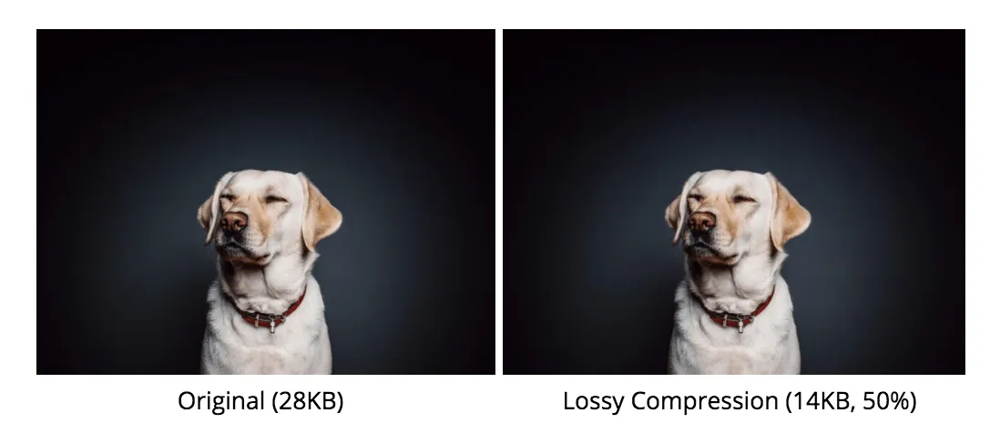

Als afbeeldingen en geluidsfragmenten veel details bevatten, worden deze bestanden erg groot. Ook nemen deze bestanden dan veel opslagruimte in beslag, wat leid tot een harde schrijf id snel vol is, maar dat is niet het enigste nadeel. Afbeeldingen, geluidsfragmenten en video's zullen langer doen over het downloaden en je databundel van je telefoon zal sneller leeg zijn. Om al deze nadelen te verhelpen zijn er bestandscompressies. Deze compressies zorgen ervoor dat de bestandsgrootte van de bestanden wordt verkleind. Om zo te zorgen dat je geen last meer hebt al alle nadelen. Er zijn 2 soorten compressies, lossy compression en lossness compression.
Lossy compression wordt gebruikt bij afbeeldingen en video's. Bij lossy compression worden eigenlijk gewoon delen van het bestand verwijderd, om zo te zorgen dat het bestand kleiner word. Dit betekent dit dat er delen uit je video geknipt worden of dat je gaten in je afbeelding krijgt, maar dit betekent dat de kwaliteit van je afbeelding minder wordt. Neem als voorbeeld een afbeelding waar de zee 60 blauwtinten heeft, hierzal de bestandscompressie zorgen dat er minder blauwtinten zijn, om te zorgen dat het bestand kleiner wordt. Dat lossy compression wordt toegepast hoeft niet direct te betekenen dat de kwaliteit zo ver achteruit is gegaan dat je het heel duidelijk ziet. Neem als voorbeeld de afbeelding hieronder. Deze foto heeft een lossy compression van 50%, wat betekent dat de helft van de kwaliteit naar beneden is gegaan, maar ondanks dat zie je (bijna) geen verschil.
Het verschil tussen lossy compression en lossness compression is dat bij lossness compression er niks aan de kwalitei van de afbeelding of video word verandert. Lossness compression is dan ook alleen een slimmere manier van het opslaan van afbeeldingen en video's. Stel dat op een afbeelding 7 pixels naast elkaar de zelfde waarde hebben, bijvoorbeeld 57, dan word dat normaal opgeslagen als (57,57,57,57,57,57,57), maar bij lossness compression wordt dat opgslagen als (7,57). Dit zorgt ervoor dat het bestand minder groot is.
Een ander verschil tussen lossy compression en lossness compression is dat een bestand dat is aangepast door lossness compression altijd weer terug gezet kan worden naar het oorspronkelijke bestand, maar bij lossy compression kan dit niet. Dat komt omdat er bij lossy compression echt informatie is aangpast en verwijderd. Lossy compression zorgt in het algemeen voor een kleiner bestand dan lossness compression. Als jij bijvoorbeeld een hele leuke foto naar je beste vriend(in) van jullie samen wil sturen. Zal je zien dat je beste vriend(in) een minder scherpe foto op zijn/haar telefoon heeft dan jij. Dit komt omdat je telefoon zelf lossy compression toepast.
Niet alleen bij afbeeldingen en video's wordt compressie gebruitk, maar ook bij geluidsfragmenten. Bij geluidsfragmenten wordt er vooral gebruik gemaakt van lossy compression, want net als bij afbeeldingen en video's kan er best veel van het bestand aangepast en verwijderd worden zonder dat wij het door hebben. Mensen kunnen tot ongeveer 20 kHz horen, een voorbeeld van lossy compression bij geluidsfragmenten is bijvoorbeeld dat alles boven de 17 kHz weggelaten word. Dit kan echter wel alleen als er ook nog andere geluiden zijn op dat moment, want ander hoor je gewoon niks.
Bij muziek is de sample rate heel belangrijk. Ook is het van belang met om te weten met hoeveel bits deze sample rate wordt opgeslagen. Als je deze 2 vermenigvuldigt met elkaar krijg je de bitrate, die wordt uitgedrukt in kilobits per seconde (kbps). Een professionele sample rate wordt opgenomen met 44.100 hz en worden er over het algemeen 32 bits gebruikt. 44.100 x 32 = 1.411.200 bps, ook wel 1.411,2 kbps. Deze waarde kan naar beneden gehaald worden tot zelfd 256 kbps zonder dat het verschil echt hoorbaar is met het menselijk oor. Pas vanaf 128 kbps is het echt hoorbaar voor het menselijk oor dat er veranderingen zijn aangebracht.